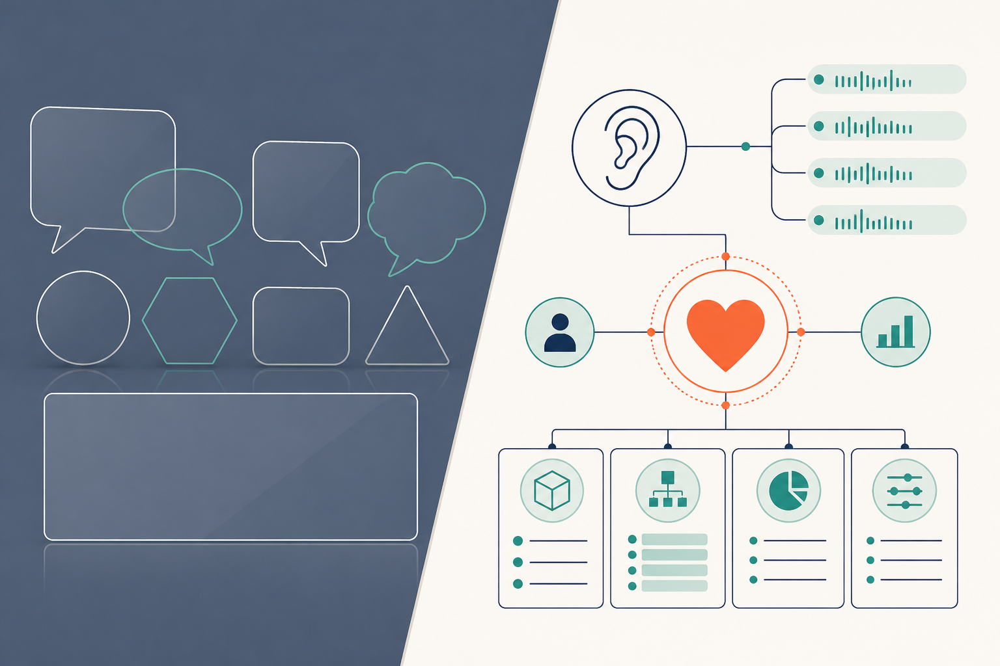
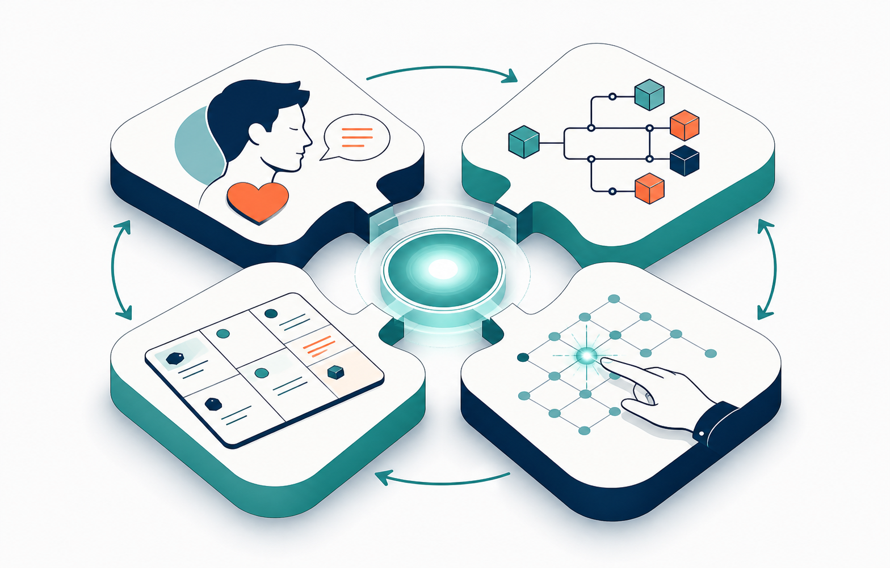

장면 1 · 아이디어
프롬프트 한 줄로 뽑아낸 그럴듯한 아이디어
고객의 맥락과 니즈가 빠져 실제 시장에서 작동하지 않는 기획. 그럴듯함과 작동함은 다릅니다.
AI × DESIGN THINKING × TOCfE
고객의 진짜 니즈를 발견하고, 생각의 기술(디자인씽킹·TOCfE)과 AI를 결합해 작동하는 비즈니스 모델과 현장 맞춤형 교육을 만듭니다.
01 WHY — 우리가 보는 문제
AI는 이제 누구나 씁니다. 그러나 시장에서 작동하는 기획과 교육은 여전히 드뭅니다. 두 가지 장면이 그 이유를 보여줍니다.
장면 1 · 아이디어
고객의 맥락과 니즈가 빠져 실제 시장에서 작동하지 않는 기획. 그럴듯함과 작동함은 다릅니다.
장면 2 · 교육
배워도 내 비즈니스 모델과 업무 흐름으로 이어지지 않는 교육. 배움과 변화 사이에 설계가 비어 있습니다.

02 PROCESS — 설계 흐름
인터뷰와 현장 관찰로 고객이 말하지 않은 니즈까지 찾아냅니다. 감이 아니라 관찰에서 출발합니다.
아이디어를 쏟아내기 전에, 무엇이 진짜 걸림돌인지 사고도구로 구조화해 짚습니다.
고객 가치, 수익·운영 구조, 실행 조건을 한 장의 캔버스로 정리합니다.
AI와 함께 빠르게 시제품과 검증 자료를 만들고, 현장에서 쓸 수 있는 실행 로드맵으로 넘깁니다.

03 WHAT WE DO — 3대 핵심 축
프로젝트로, 컨설팅으로, 교육으로. 필요한 지점부터 시작합니다.
현장 관찰과 공감에서 출발해, AI로 빠르게 가설을 시각화하고 고객 반응을 검증하는 문제해결 프로젝트.
고객에게 전달할 핵심 가치, 수익·운영 구조, 실행 로드맵까지 — 실제로 작동하는 사업 모델을 구축합니다.
대학·창업지원단·기업·공공기관·교원을 위한 실습형 교육. 참여자의 실제 과제로 진행합니다.
04 DIFFERENCE — 무엇이 다른가
05 WHO WE WORK WITH — 대상 · 사례
기관과 조직이 가진 실제 과제를 가져오시면, 그 과제로 교육과 설계를 진행합니다.
아이디어를 사업계획으로 구체화하고, 고객 검증까지 경험하는 창업 교육.
예: 창업 교과·비교과, 창업 경진대회 멘토링, 캠프
부서의 실제 업무 과제에 AI를 적용하고, 신사업·서비스 가설을 검증합니다.
예: 팀 단위 AX 워크숍, 신사업 기획 검증, 리더십 워크숍
지역과 정책의 문제를 함께 정의하고, 참여형 워크숍으로 대안을 만듭니다.
예: 지역 문제 정의 워크숍, 사업 아이디어 검증, 주민 참여 프로그램
AI 융합 수업을 직접 설계해 보고, 학생 프로젝트로 이어지는 연수.
예: 교원 연수, 교과 연구회, AI 융합 수업·프로젝트 설계
06 CONTACT — 문의하기
교육·워크숍, 비즈니스 모델 설계, 협업 제안 모두 환영합니다. 상황과 과제를 알려 주시면 맞는 방식으로 제안드립니다.